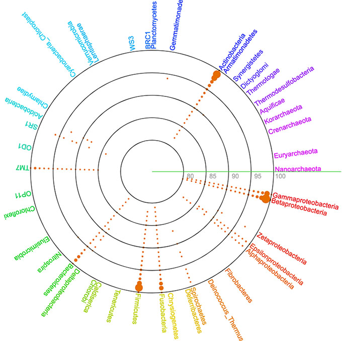

国立遺伝学研究所 ゲノム多様性研究室

DB&TOOLS
Microbiome Datahub
マイクロバイオーム由来のMAGの統合データベース
We are developing Microbiome Datahub, which is a integrated microbiome database of microbial genomes and metagenomes (including MAGs). Currently, approximately 210,000 MAGs are available for search and browsing, along with associated information on quality, taxonomy, gene functional composition, environment, and predicted phenotypes.
Microbiome Datahub
[JST NBDCのプロジェクト紹介ページ]
[Paper] [プレスリリース]
PZLAST-MAG
MAG由来タンパク質相手の高速な配列類似性検索が可能なWebサーバ
PZLAST-MAG: an ultra-fast amino acid sequence similarity search server against public MAG proteins
[PZLAST]
AutoFixMark
独立栄養細菌が持つ7種類のCO2経路所持の有無をゲノムから予測するツール
AutoFixMark is a lightweight, cross-platform CLI tool that predicts the seven autotrophic natural CO₂ fixation pathways (CBB, rTCA, WL, 3HP, 3HP/4HB, DC/4HB, and rGly) from a list of KEGG Orthology (KO) IDs and outputs the results in TSV format.
[AutoFixMark] [Paper] [プレスリリース]
NIG_VRL
遺伝研スパコンで実行可能なSARS-CoV-2のゲノム解析パイプライン
A SARS-CoV-2 genome analysis pipeline that can be used in the NIG supercomputer.
[NIG_VRL] [DDBJの関連webページ]